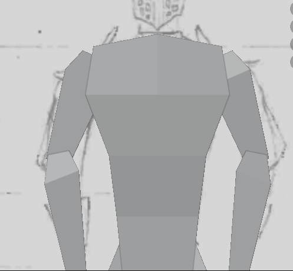
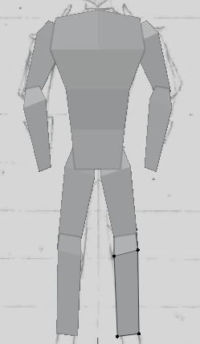
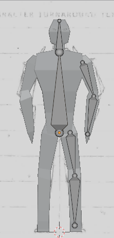

I made a simple sketch of how i want my character to look & scanned it
i'm quite happy with how the sketch has turned out so far but i do think it's legs are slightly too thin also the scan looks weird because of the fact its drawn in pencil so ill probably draw over it in pen otherwise i think its quite good
i gotta be honest i didnt really use the feedback but idc tbh
i honestly didnt get a screenshot while i was making the torso but i didnt run into any npotable issues whilst making it so here's the finished product
again, i didnt get a screenshot whilst modelling the legs & only had an issue with my mouse dying, so it didnt matter much, also i only have a picture of the torso with the legs so you're getting that
i actually got a screenshot during the rigging, but i didnt get one of the rigging after it got finished & i already did everyting else D:, so anyways heres a screenshot
